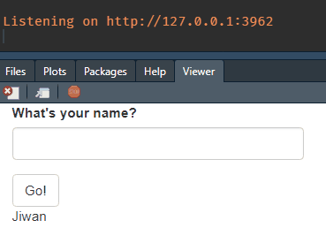

You have a nice shiny app that manipulates data based on user input, carries out some analysis, and displays the results back to the user. Great! Now it’s time to clean up some code, and break out the ui.R & server.R into modules. Uh-oh, all of a sudden, my app’s not working!
Does this sound familiar? It definitely happened to me countless of times. Today, I want to talk about an efficient way to modularize your Shiny app using R6.
Here’s a simple shiny app that takes 2 inputs from the user to manipulate the iris dataset, and generate a table and a graph. Notice the iris_dat reactive that manipulates the data.
library(shiny)
library(dplyr)
library(ggplot2)
ui <- fluidPage(
numericInput("n_rows",
"Number of rows to display",
value = 10,
min = 1,
max = nrow(iris)),
numericInput("multiplier",
"A random calculation",
value = 1,
min = 1,
max = 10),
tableOutput("table"),
plotOutput("graph")
)
server <- function(input, output, session) {
iris_dat <- reactive(
iris %>%
head(input$n_rows) %>%
mutate(Sepal.Length = Sepal.Length * input$multiplier)
)
output$table <- renderTable({
iris_dat()
})
output$graph <- renderPlot({
iris_dat() %>%
ggplot(aes(Sepal.Length, Sepal.Width)) +
geom_point()
})
}
# shinyApp(ui, server)
This app.R works. But you can imagine how long this file would get as you add more components.
Let’s see how they teach you to modularize your code.
The above shiny app has 3 components.
We’ll turn these components into their own modules.
mod_manip.R
iris_dat reactive.mod_manip_ui <- function(id) {
ns <- NS(id)
tagList(
numericInput(ns("n_rows"),
"Number of rows to display",
value = 10,
min = 1,
max = 150),
numericInput(ns("multiplier"),
"A random calculation",
value = 1,
min = 1,
max = 10)
)
}
mod_manip_server <- function(id) {
moduleServer(id, function(input, output, session) {
iris_dat <- reactive(
iris %>%
head(input$n_rows) %>%
mutate(Sepal.Length = Sepal.Length * input$multiplier)
)
return(iris_dat)
})
}mod_table.R
dat argument in the server, and displays it as a table in the UI. Notice we’re invoking dat(), as we would with any other reactive.mod_table_ui <- function(id) {
ns <- NS(id)
tableOutput(ns("table"))
}
mod_table_server <- function(id, dat) {
moduleServer(id, function(input, output, session) {
output$table <- renderTable({
dat()
})
})
}mod_graph.R
mod_table, but with a plot.mod_graph_ui <- function(id) {
ns <- NS(id)
plotOutput(ns("graph"))
}
mod_graph_server <- function(id, dat) {
moduleServer(id, function(input, output, session) {
output$graph <- renderPlot({
dat() %>%
ggplot(aes(Sepal.Length, Sepal.Width)) +
geom_point()
})
})
}Putting these all together, our app.R now looks a lot more readable:
ui <- fluidPage(
mod_manip_ui("mod_manip_1"),
mod_table_ui("mod_table_1"),
mod_graph_ui("mod_graph_1")
)
server <- function(session, input, output) {
iris_dat <- mod_manip_server("mod_manip_1")
mod_table_server("mod_table_1", dat = iris_dat)
mod_graph_server("mod_graph_1", dat = iris_dat)
}
# shinyApp(ui, server)
Great start! We now have 3 modules that each represent a component of our Shiny app. This app still works, because the reactivity chain is respected across modules.
You can definitely stop here and call it a day. But if you want to take it a little further, think about these points:
input$multiplier in mod_table_server, how do you do it?iris_dat is calculated correctly, and passed correctly to other modules?While these are definitely doable tasks, they require a little more work.
mod_manip_server return two things, the input$multipler, as well as iris_data. Then have mod_table_server receive another argument multipliershiny::testServer to test the server logic.Buuuuuuuuuuuuuuuuut,
What if we used R6?
multiplier public field in an R6 object, from anywhere!test_that framework to test the logic automatically.
R6 is an object oriented programming system that can hold data and functions. It’s useful because when these data fields are modified inside a module, these modified values are available in the global environment. This means we can hold the entire data reading/manipulating/outputting process inside a single object, and interact with it from anywhere.
R6::R6Class is the only function you use. At minimum, it takes as arguments, the class name, and a list of information (data and functions), that can be read and written from anywhere.
ExampleR6 <- R6::R6Class(
"ExampleR6",
public = list(
name = "Jiwan"
)
)You can create a new instance of this object, by :
example1 <- ExampleR6$new()
example1## <ExampleR6>
## Public:
## clone: function (deep = FALSE)
## name: JiwanIgnore that “clone” thing, what’s important is that there’s a field named, “name”, with a value “Jiwan”.
You can interact with it like so:
example1$name <- "Not Jiwan"
example1## <ExampleR6>
## Public:
## clone: function (deep = FALSE)
## name: Not JiwanThat’s about all you need to know. let’s dive straight into using this in Shiny modules.
To use R6 in your modules, all you have to do is create an instance of the R6 object, and pass them to the desired modules’ server functions. Notice the r6 arguments in the 2 modules below.
mod_1 takes a text input from user, and when actionButton is pressed, it updates r6’s name field.
mod_1_ui <- function(id) {
ns <- NS(id)
tagList(
textInput(ns("input_name"), "What's your name?"),
actionButton(ns("go"), "Go!")
)
}
mod_1_server <- function(id, r6) {
moduleServer(id, function(input, output, session) {
observeEvent(input$go, {
r6$name <- input$input_name
print(r6$name) # Print to console the r6's name field
})
})
}mod_2 prints out the r6’s name field.
mod_2_ui <- function(id) {
ns <- NS(id)
textOutput(ns("output_name"))
}
mod_2_server <- function(id, r6) {
moduleServer(id, function(input, output, session) {
renderText(r6$name)
})
}Now if you run this Shiny app…
ui <- fluidPage(
mod_1_ui("mod_1"),
mod_2_ui("mod_2")
)
server <- function(session, input, output) {
# Create an instance of the R6 class
hello_r6 <- ExampleR6$new()
# Pass the instance of R6 to the modules.
mod_1_server("mod_1", r6 = hello_r6)
mod_2_server("mod_2", r6 = hello_r6)
}
# shinyApp(ui, server)It doesn’t work.

Why isn’t the textOutput updating, even though r6 is working (printing in the console correctly)?
It’s because mod_2 has no idea that r6 is being updated, because the two modules are not connected by a reactivity.
This is when {gargoyle} comes in.
{gargoyle} has three main functions, init(), trigger(), watch(). The main idea is painfully clever. init sets a numeric reactiveVal to the session, trigger adds +1 to the reactiveVal, and watch listens to this event.
That’s literally it.
What’s good about this, is that we can control/set off the reactivity exactly when we want it, across modules.
The source code is really short, so you can just define those functions on your own if you don’t want another package dependency, like I’ve done in my most recent Shiny app.
Now, let’s re-visit the above example.
mod_1_ui <- function(id) {
ns <- NS(id)
tagList(
textInput(ns("input_name"), "What's your name?"),
actionButton(ns("go"), "Go!")
)
}
mod_1_server <- function(id, r6) {
moduleServer(id, function(input, output, session) {
observeEvent(input$go, {
r6$name <- input$input_name
gargoyle::trigger("change_name") # Tell mod_2 to update, everytime input$go is clicked
print(r6$name)
})
})
}mod_2_ui <- function(id) {
ns <- NS(id)
textOutput(ns("output_name"))
}
mod_2_server <- function(id, r6) {
moduleServer(id, function(input, output, session) {
# watch for the trigger in from mod_1
observeEvent(gargoyle::watch("change_name"), {
renderText(r6$name)
})
})
}ui <- fluidPage(
mod_1_ui("mod_1"),
mod_2_ui("mod_2")
)
server <- function(session, input, output) {
second_r6 <- ExampleR6$new()
# Set up the initial trigger
gargoyle::init("change_name")
mod_1_server("mod_1", r6 = second_r6)
mod_2_server("mod_2", r6 = second_r6)
}
# shinyApp(ui, server)
Yay! It‚Äôs working!! üéâ Pretty cool huh?
Please refer to Advanced R chapter, and Engineering Shiny chapter for the details I didn’t cover here.
Let’s dive back into the iris problem.
Armed with this knowledge from above, our strategy to modularize the iris app is:
mod_manip updates r6, and trigger reactive eventsmod_table & mod_graph listen for changes, to retrieve data from r6 when neededHere’s the R6 definition we’ll use for the iris app:
IrisR6 <- R6::R6Class(
"IrisR6",
public = list(
n_rows = NULL,
multiplier = NULL,
orig_data = iris,
res_data = NULL,
manip_data = function(dat) {
dat %>%
head(self$n_rows) %>%
mutate(Sepal.Length = Sepal.Length * self$multiplier)
}
)
)mod_manip,manip_data replicates the data manipulating logic. We’ll call this from mod_manipres_data field from the same modulemod_manip.R
r6 as an argument, instead of dat.r6, execute the manip_data function, and save the result into itself.mod_manip_ui <- function(id) {
ns <- NS(id)
tagList(
numericInput(ns("n_rows"),
"Number of rows to display",
value = 10,
min = 1,
max = 150),
numericInput(ns("multiplier"),
"A random calculation",
value = 1,
min = 1,
max = 10),
actionButton(ns("go"), "Go!")
)
}
mod_manip_server <- function(id, r6) {
moduleServer(id, function(input, output, session) {
observeEvent(input$go, {
r6$n_rows <- input$n_rows
r6$multiplier <- input$multiplier
new_data <- r6$manip_data(dat = r6$orig_data)
r6$res_data <- new_data
gargoyle::trigger("update_iris")
})
})
}mod_table.R
r6 as argument, rather than datinput$multiplier from anywhere.r6$res_data with brackets.mod_table_ui <- function(id) {
ns <- NS(id)
tagList(
textOutput(ns("text")),
tableOutput(ns("table"))
)
}
mod_table_server <- function(id, r6) {
moduleServer(id, function(input, output, session) {
observeEvent(gargoyle::watch("update_iris"), {
output$text <- renderText(paste("Multiplier:", r6$multiplier))
output$table <- renderTable({
req(!is.null(r6$res_data))
r6$res_data
})
})
})
}mod_graph.R
mod_graph_ui <- function(id) {
ns <- NS(id)
plotOutput(ns("graph"))
}
mod_graph_server <- function(id, r6) {
moduleServer(id, function(input, output, session) {
observeEvent(gargoyle::watch("update_iris"), {
output$graph <- renderPlot({
req(!is.null(r6$res_data))
r6$res_data %>%
ggplot(aes(Sepal.Length, Sepal.Width)) +
geom_point()
})
})
})
}ui & server
IrisR6$new() creates a new instance of the IrisR6 object.ui <- fluidPage(
column(12, mod_manip_ui("mod_manip_1")),
column(6, mod_table_ui("mod_table_1")),
column(6, mod_graph_ui("mod_graph_1"))
)
server <- function(session, input, output) {
r6 <- IrisR6$new()
gargoyle::init("update_iris")
mod_manip_server("mod_manip_1", r6 = r6)
mod_table_server("mod_table_1", r6 = r6)
mod_graph_server("mod_graph_1", r6 = r6)
}
# shinyApp(ui, server)And the app looks solid!

Remember that test_that thing I brought up?
Because we’re not using reactivity, we can test the logic of this Shiny app, just like we would a regular function. This is great especially if your shiny app is built on top of {golem}. Here’s how a test-iris_shiny_app.R might look like (not executed cuz blog)
library(testthat)
test_that("Iris manipulation works in R6", {
r6 <- MyR6$new()
r6$n_rows <- 5
r6$multiplier <- 10
new_data <- r6$manip_data(dat = r6$orig_data)
r6$res_data <- new_data
espect_equal(nrow(r6$res_data), 5)
espect_equal(max(r6$res_data$Sepal.Length), 79)
})There you have it! I hope you learned something from this blog post :)
For a small shiny app, this may be an overkill, but if you have a shiny app that does a lot of data processing, I recommend using this approach, rather than juggling through that logic in you modules, and having to keep track of it everywhere.
In this blog post, we learned: